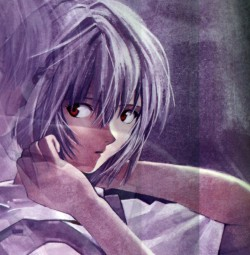

Forums galactiques > Assemblée Galactique : diplomatie officielle > L'apprentie et Son Maitre
Pages : 1
| Seigneur Grimaldus Respect diplomatique : 806  20/07 ETU 19:46 | Score : 11 Détails La jeune fille ouvrit les yeux, le Seigneur Grimaldus laissa échapper un soupir de satisfaction.
Il avait lutter toute la nuit pour l'attirer dans ce nouveau réceptable, elle, son apprentie dont l'ancien corps avait été détruit. Il avait trouver cette fille, avait chasser cet esprit faible du coprs sans la mondre difficulté, par contre pour ramener son apprentie, elle s'était débattue, comme si elle ne comprenait pas ce qui lui était arrivé. "Tu es éveillée." La jeune fille, nullement embarrassée par sa quasi nudité, se leva et s'observa sous toutes les coutures avec une moue boudeuse. "Quel est ce corps, mon Maître ?" "Je n'ai trouvé mieux en si peu de temps. Mais il te va à ravir. Il reflète cette froideur et attirance, qui sont au fond de toi. Tes pouvoirs reviendront bientot." "J'ai l'impression d'être aveugle, est ce ainsi que voient les humains ? Par ces sinistres globes occulaires... Ce n'est vraiment...pas pratique... Mais merci, mon Maître, quand la navette a été détruite j'ai cru devoir errer dans la Galaxie sans but et à tout jamais." "Je comprends cela. Tu te sens capable de reprendre du service, Ayanami ?" "Bien sur mon Seigneur, ce sera difficile, le temps que je m'habitue bien sur." La jeune Seigneur se leva et alla chercher sa bure noire, en pendant sur le mur. Elle la passa et se sentie rassurée par ce contact familier sur ce corps qui ne l'était pas. Elle sortit de la pièce, laissant son Maître seul. Le Seigneur Grimaldus resta un temps à regarder la porte puis se matérialisa dans l'esprit de son apprentie. "Tu ne porteras de masque, qu'une fois lavé l'affront que tu as subi. Tel est ma volonté." "Bien mon Seigneur..." | ||
| Ayanami Respect diplomatique : 7  21/07 ETU 16:53 | Score : 7 Détails Ayanami arpentait les couloirs de l'Assemblée Galactique, seule contrairement à son habitude, son Maître semblait vouloir qu'elle vole de ses propres ailes.
Mais des mots résonnaient dans son crâne... "Tu ne porteras de masque, qu'une fois lavé l'affront que tu as subi. Telle est ma volonté." Elle avait acquièsé mais sans trop comprendre les implications... Mais maintenant qu'elle savait qu'il voulait la voir diriger un peuple... Elle allait devoir se présenter devant ces pitoyables humains, le visage à nu... Entre ça et le fait qu'elle en était reduite aux capacités de compréhension de son hote. Désormais elle ne pourrait plus discerner au-delà du voile de la temporalité, ni décider quand et comment périraient ses serviteurs et ce pour un temps indéfini... Elle ne pourrait plus percer à jour les mensonges du destin, plonger dans l'ame d'un homme et lire dans les courants les plus secrets de son inconscient. Elle ne pourrait plus surveiller ni influencer une infinité d'événements simultanés tout en vaquant à ses occupations. Toute à ses pensées, elle se retrouva dans la vaste salle où un homme d'age mur s'époumonait au micro. "Pathétique. Il gigote comme une mouche prise dans la toile, sachant que la mort est en marche pour elle mais tentant vainement de lui échaper, pourquoi gaspiller tant d'énergie alors qu'une vie d'humains est si courte ? Guère plus longue qu'une étincelle comparée au feu crépitant de la vie de Seigneurs. Cette métaphore la fit sourire malgré elle. Elle lui rappelaient une chanson tres courte qu'elle avait entendu jadis. Elle se surprit même à le fredonner, dérangeant quelque crétin bedonnant qui lui intima de se taire, mais elle n'en avait cure. "Un regard incendiaire et tout est calciné. Embrassez cette terre avant de l'embrasez. Par le feu de nos êtres nous irons purifier Nos enemis, nos frères qui nous ont contrarié." Courte et sans détour, comme elle appréciait. Un peu ce qu'elle avait décidé de réserver à cette Galaxie... Elle alla s'asseoir dans les rangs de ses rares connaissances qui ne la reconnurent pas tout de suite, mais se calmerent en voyant le signe de main apaisant que le Seigneur Grimaldus leur fit. |
Pages : 1
Forums galactiques > Assemblée Galactique : diplomatie officielle > L'apprentie et Son Maitre